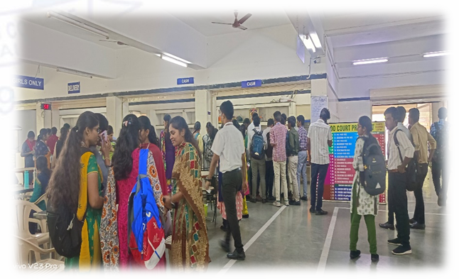
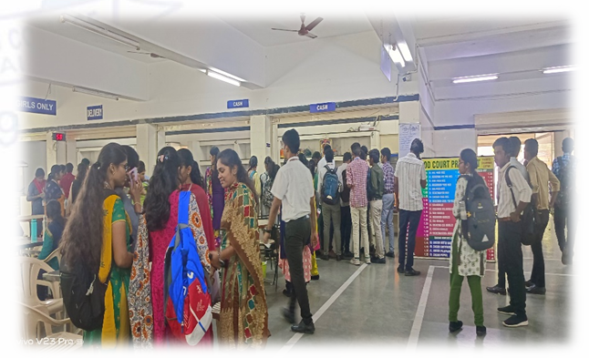

In Food Court ,it makes more time to recive the order and it also makes rush in bill counter.
It may also leads to misleading information while placing an order.
Solution
By creating a Mobile Application we can pre-order our food during break.
So, it will reduce rush in bill counter and also the students need not
to wait for a particular period of time to recive their food.
It saves time and there is no misleading information.
 
